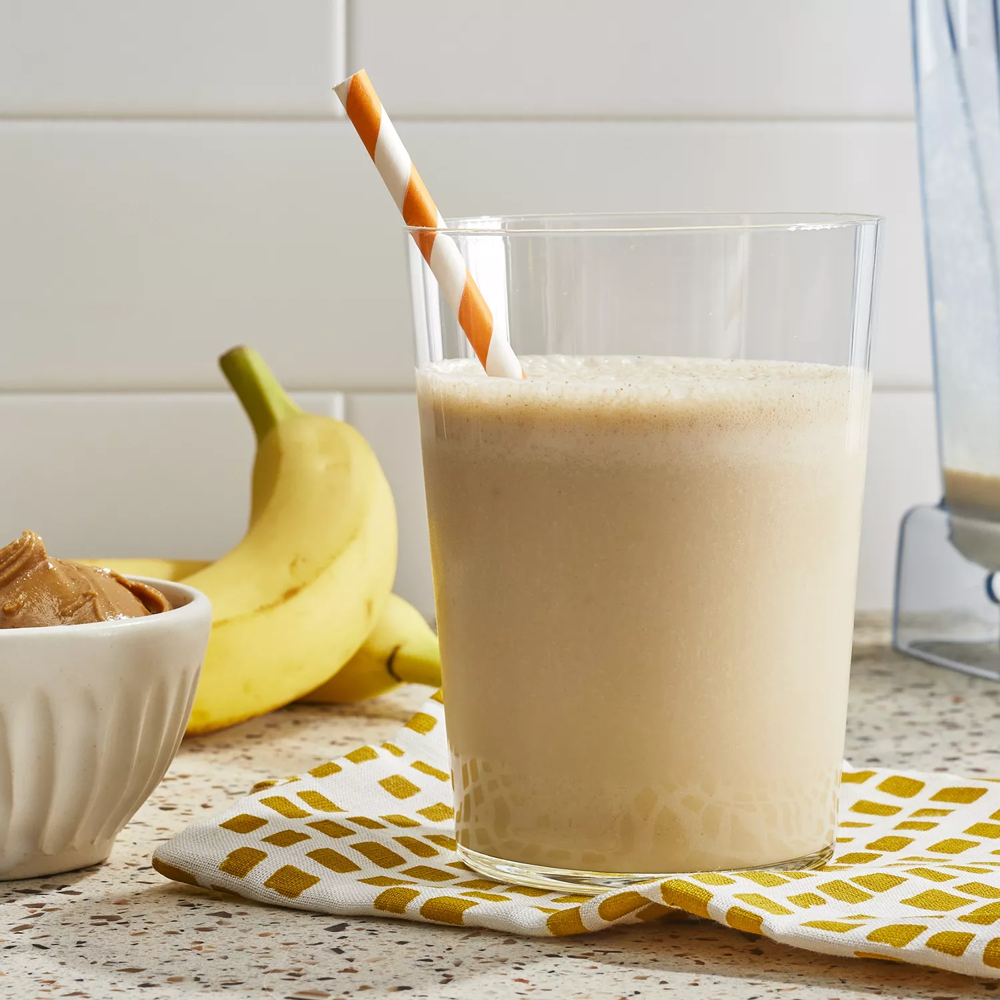

Peanut Butter Smoothie

Ingredients
- 2 bananas, broken into chunks
- 2 cups milk
- ½ cup peanut butter
- 2 tablespoons honey, or to taste
- 2 cups ice cubes
Directions
- Place bananas, milk, peanut butter, honey, and ice cubes in a blender; blend until smooth, about 30 seconds.